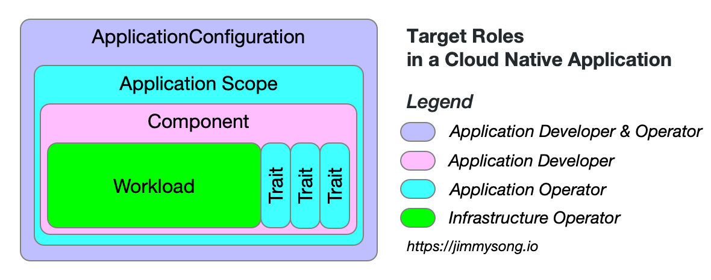

云原生应用的定义
定义云原生应用的基本模型。
本文参考的是 OAM 规范中对云原生应用的定义，并做出了引申。
云原生应用是一个相互关联但又不独立的组件（service、task、worker）的集合，这些组件与配置结合在一起并在适当的运行时实例化后，共同完成统一的功能目的。
云原生应用模型
下图是 OAM 定义的云原生应用模型示意图，为了便于理解，图中相同颜色的部分为同一类别的对象定义。

OAM 的规范中定义了以下对象，它们既是 OAM 规范中的基本术语也是云原生应用的基本组成。
- Workload（工作负载）：应用程序的工作负载类型，由平台提供。
- Component（组件）：定义了一个
Workload的实例，并以基础设施中立的术语声明其运维特性。 - Trait（特征）：用于将运维特性分配给组件实例。
- ApplicationScope（应用作用域）：用于将组件分组成具有共同特性的松散耦合的应用。
- ApplicationConfiguration（应用配置）：描述
Component的部署、Trait和ApplicationScope。
OAM 规范中提供了一个使用以上对象定义云原生应用的工作流示例。
关注点分离
下图是不同角色对于该模型的关注点示意图。

我们可以看到对于一个云原生应用来说，不同的对象是由不同的角色来负责的：
- 基础设施运维：提供不同的
Workload类型供开发者使用； - 应用运维：定义适用于不同
Workload的运维属性Trait和管理Component的ApplicationScope即作用域； - 应用开发者：负责应用组件
Component的定义； - 应用开发者和运维：共同将
Component与运维属性Trait绑定在一起，维护应用程序的生命周期；
基于 OAM 中的对象定义的云原生应用可以充分利用平台能力自由组合，开发者和运维人员的职责可以得到有效分离，组件的复用性得到大幅提高。
参考
修改于 2020年5月25日: add the cloud native app white paper (c867083)